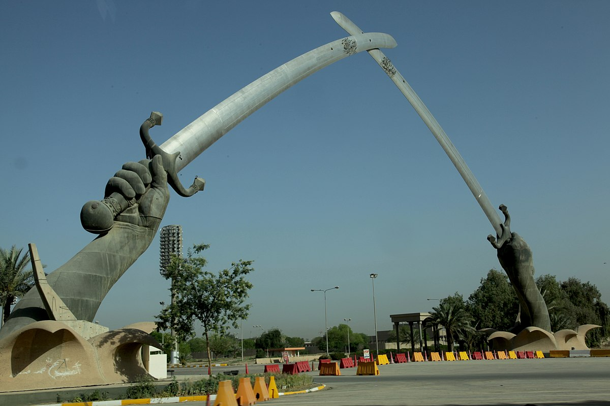

×

Iraq
Гимн
Моя родина, моя родина
مــوطــنــي، مــوطــنــي
Величие, красота, красота и великолепие
الجـلال والجـمال والســناء والبهاء
В твоем Господе, в твоем Господе
فـــي ربــاك، فــي ربـــاك
И жизнь, избавление, удовлетворение и надежда
والحـياة والنـجاة والهـناء والرجـاء
В ваших желаниях, в ваших желаниях
فــي هـــواك، فــي هـــواك
Могу ли я увидеть тебя, могу ли я увидеть тебя?
هـــــل أراك، هـــــل أراك
Спокойный, изящный и щедрый
سالما مـنعما و غانما مكرما
Мирный и добрый
سالما منعما و غانما مكرما
Могу я увидеть тебя наедине?
هـــــل أراك فـي عـــلاك
Сообщите о рыбе, сообщите о рыбе
تبـلـغ السـمـاك، تبـلـغ السـماك
Моя родина, моя родина
مــوطــنــي، مــوطــنــي
Моя родина, моя родина
مــوطــنــي، مــوطــنــي
Молодежь не устанет от независимости или аннигиляции
الشباب لن يكل همه أن يستقـل أو يبيد
Мы черпаем из ответа и не засчитываемся
نستقي من الـردى ولن نكون للعــدى
Как раб, как раб
كالعـبـيـــــد، كالعـبـيـــــد
Мы не хотим, мы не хотим
لا نريــــــد، لا نريــــــد
Мы были унижены навсегда и пережили несчастье
ذلنا المؤبدا وعيشنا المنكدا
Мы были унижены навсегда и пережили несчастье
ذلنا المؤبدا وعيشنا المنكدا
Мы не хотим, но делаем
لا نريــــــد بـل نعيــــد
Слава покраснения, слава покраснения
مـجـدنا التـليـد، مـجـدنا التليـد
Моя родина, моя родина
مــوطــنــي، مــوطــنــي
Моя родина, моя родина
مــوطــنــي، مــوطــنــي
Хоссам и Светлячок не разговаривают и конфликтуют
الحسام و اليـراع لا الكـلام والنزاع
Наш символ, наш символ
رمــــــزنا، رمــــــزنا
Наша слава и наш залог обязательны из верности
مـجدنا و عـهدنا واجـب من الوفا
Встряхните нас, встряхните нас
يهــــــزنا، يهــــــزنا
Наша дорогая, наша дорогая
عـــــــزنا، عـــــــزنا
Цель, которая чтит, и развевается знамя
غاية تـشرف و راية ترفرف
Цель, которая чтит, и развевается знамям
غاية تشرف و راية ترفرف
О, есть на тебе
يا هـــنــاك فـي عـــلاك
Отказ от обещания, отказ от обещания
قاهرا عـــداك، قاهـرا عــداك
моя нация моя нация
موطني، موطني
____